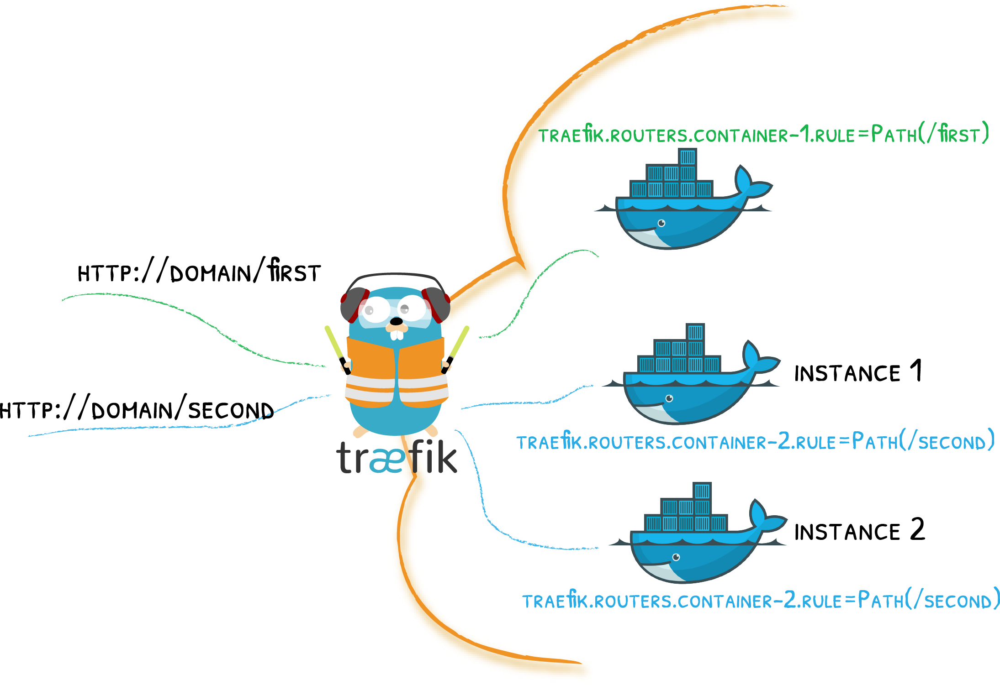

Traefik & Docker¶
标签和容器的故事

将标签贴在容器上，让 Traefik 完成其余的工作！
T 快速入门使用 Docker
如果你还没有，也许你想通过使用 docker provider 的快速入门！
配置示例¶
配置 Docker 和部署服务
启用docker提供程序
[providers.docker]providers:
docker: {}--providers.docker=true将标签附加到容器（在 docker compose 文件中）
version: "3"
services:
my-container:
# ...
labels:
- traefik.http.routers.my-container.rule=Host(`my-domain`)配置 Docker Swarm 和部署/服务
启用docker provider（Swarm模式）
[providers.docker]
# swarm classic (1.12-)
# endpoint = "tcp://127.0.0.1:2375"
# docker swarm mode (1.12+)
endpoint = "tcp://127.0.0.1:2377"
swarmMode = trueproviders:
docker:
# swarm classic (1.12-)
# endpoint = "tcp://127.0.0.1:2375"
# docker swarm mode (1.12+)
endpoint: "tcp://127.0.0.1:2375"
swarmMode: true--providers.docker.endpoint="tcp://127.0.0.1:2375"
--providers.docker.swarmMode=true在Swarm模式下（在docker compose文件中）将标签附加到服务（而不是容器）
version: "3"
services:
my-container:
deploy:
labels:
- traefik.http.routers.my-container.rule=Host(`my-domain`)Docker Swarm模式中的标签
在Swarm模式下，Traefik使用在服务上找到的标签，而不是在单个容器上。因此，如果您使用具有Swarm模式的撰写文件，则应在deploy服务部分中定义标签。仅对docker-compose版本3+启用此行为 (Compose file reference)。
提供者配置选项¶
浏览参考
endpoint¶
Required, Default="unix:///var/run/docker.sock"
[providers.docker]
endpoint = "unix:///var/run/docker.sock"providers:
docker:
endpoint: "unix:///var/run/docker.sock"--providers.docker.endpoint="unix:///var/run/docker.sock"Traefik 需要访问 docker socket 才能获得动态配置。
安全说明
根据您的上下文，访问Docker API没有任何限制可能是一个安全问题：如果Traefik受到攻击，那么攻击者可能会访问Docker（或Swarm Mode）后端。
如Docker文档中所述:(Docker Daemon Attack Surface page):
[...] only **trusted** users should be allowed to control your Docker daemon [...]
提高安全性
TraefikEE通过分离控制平面（连接到Docker）和数据平面（处理请求）来解决此问题。.
安全补偿
通过TCP公开Docker套接字，而不是默认的Unix套接字文件。它允许AAA（身份验证，授权，计费）概念的不同实现级别，具体取决于您的安全评估：
- 使用客户端证书进行身份验证，如“保护Docker守护程序套接字”中所述。
- 使用Docker授权插件机制进行授权
- 通过仅在Docker专用网络内部暴露套接字，在网络级进行计费，仅适用于Traefik。
- 在容器级别进行计算，通过将套接字暴露在另一个容器而不是Traefik的容器上。使用Swarm模式，它允许在工作节点上调度Traefik，在管理器节点上只有“socket exposer”容器。
- 在内核级别进行计算，通过使用SELinux等机制强制执行内核调用，以仅为Traefik进程（或“套接字暴露程序”进程）提供一组已识别的操作。
Traefik＆Swarm 模式
要让 Traefik 访问 Swarm 管理器的 Docker Socket，必须在 Swarm 管理器节点上安排 Traefik。
使用 docker.sock
docker-compose文件与Traefik容器共享docker sock
version: '3'
services:
traefik:
image: traefik:v2.0 # The official v2.0 Traefik docker image
ports:
- "80:80"
volumes:
- /var/run/docker.sock:/var/run/docker.sock我们在traefik的配置文件中指定docker.sock。
[providers.docker]
endpoint = "unix:///var/run/docker.sock"
# ...providers:
docker:
endpoint: "unix:///var/run/docker.sock"
# ...--providers.docker.endpoint="unix:///var/run/docker.sock"
# ...useBindPortIP¶
Optional, Default=false
[providers.docker]
useBindPortIP = true
# ...providers:
docker:
useBindPortIP: true
# ...--providers.docker.useBindPortIP=true
# ...Traefik 将请求路由到匹配容器的 IP /端口。设置时 useBindPortIP=true，您告诉 Traefik 使用附加到容器绑定的 IP /端口而不是其内部网络 IP /端口。
当与 traefik.http.services.XXX.loadbalancer.server.port 标签结合使用时（告诉 Traefik 将请求路由到特定端口），Traefik 尝试在端口上找到绑定 traefik.http.services.XXX.loadbalancer.server.port。如果找不到这样的绑定，Traefik 会回退到容器的内部网络 IP，但仍然使用traefik.http.services.XXX.loadbalancer.server.port标签中设置的内容。
usebindportip 不同情况下的例子。
| port label | Container's binding | Routes to |
|---|---|---|
| - | - | IntIP:IntPort |
| - | ExtPort:IntPort | IntIP:IntPort |
| - | ExtIp:ExtPort:IntPort | ExtIp:ExtPort |
| LblPort | - | IntIp:LblPort |
| LblPort | ExtIp:ExtPort:LblPort | ExtIp:ExtPort |
| LblPort | ExtIp:ExtPort:OtherPort | IntIp:LblPort |
| LblPort | ExtIp1:ExtPort1:IntPort1 & ExtIp2:LblPort:IntPort2 | ExtIp2:LblPort |
Note
在上表中，ExtIp代表“在绑定中找到的外部IP”，IntIp代表“内部网络容器的IP”，ExtPort代表“在绑定中找到的外部端口”，IntPort代表“内部网络容器的端口”。
exposedByDefault¶
Optional, Default=true
[providers.docker]
exposedByDefault = false
# ...providers:
docker:
exposedByDefault: false
# ...--providers.docker.exposedByDefault=false
# ...默认情况下通过 Traefik 公开容器。如果设置为 false，traefik.enable=true则将从生成的路由配置中忽略没有标签的容器。
另请参阅 Restrict the Scope of Service Discovery.
network¶
Optional, Default=empty
[providers.docker]
network = "test"
# ...providers:
docker:
network: test
# ...--providers.docker.network=test
# ...定义用于连接所有容器的默认泊坞网络。
可以使用traefik.docker.network标签在容器的基础上覆盖此选项。
defaultRule¶
Optional, Default=Host(`{{ normalize .Name }}`)
[providers.docker]
defaultRule = "Host(`{{ .Name }}.{{ index .Labels \"customLabel\"}}`)"
# ...providers:
docker:
defaultRule: 'Host(`{{ .Name }}.{{ index .Labels "customLabel"}}`)'
# ...--providers.docker.defaultRule="Host(`{{ .Name }}.{{ index .Labels \"customLabel\"}}`)"
# ...]
对于给定容器，如果标签没有定义路由规则，则由 defaultRule 定义。它必须是有效的Go 模板，并使用sprig 模板函数进行扩充。可以作为Name标识符访问容器服务名称，并且模板可以访问此容器上定义的所有标签。
swarmMode¶
Optional, Default=false
[providers.docker]
swarmMode = true
# ...providers:
docker:
swarmMode: true
# ...--providers.docker.swarmMode=true
# ...激活 Swarm 模式。
swarmModeRefreshSeconds¶
Optional, Default=15
[providers.docker]
swarmModeRefreshSeconds = "30s"
# ...providers:
docker:
swarmModeRefreshSeconds: "30s"
# ...--providers.docker.swarmModeRefreshSeconds=30s
# ...定义 Swarm 模式下的轮询间隔（以秒为单位）。
constraints¶
Optional, Default=""
[providers.docker]
constraints = "Label(`a.label.name`, `foo`)"
# ...providers:
docker:
constraints: "Label(`a.label.name`, `foo`)"
# ...--providers.docker.constraints="Label(`a.label.name`, `foo`)"
# ...约束是 Traefik 与容器标签匹配的表达式，用于确定是否为该容器创建任何路径。也就是说，如果容器的标签都没有与表达式匹配，则不会创建容器的路径。如果表达式为空，则包括所有检测到的容器。
表达式语法基于 Label("key", "value"), LabelRegexp("key", "value")函数，以及通常的布尔逻辑，如下面的示例所示。
约束表达式示例
# Includes only containers having a label with key `a.label.name` and value `foo`
constraints = "Label(`a.label.name`, `foo`)"# Excludes containers having any label with key `a.label.name` and value `foo`
constraints = "!Label(`a.label.name`, `value`)"# With logical AND.
constraints = "Label(`a.label.name`, `valueA`) && Label(`another.label.name`, `valueB`)"# With logical OR.
constraints = "Label(`a.label.name`, `valueA`) || Label(`another.label.name`, `valueB`)"# With logical AND and OR, with precedence set by parentheses.
constraints = "Label(`a.label.name`, `valueA`) && (Label(`another.label.name`, `valueB`) || Label(`yet.another.label.name`, `valueC`))"# Includes only containers having a label with key `a.label.name` and a value matching the `a.+` regular expression.
constraints = "LabelRegexp(`a.label.name`, `a.+`)"另请参阅 Restrict the Scope of Service Discovery.
Routing Configuration Options¶
一般¶
服务自动为每个容器实例获取一个服务器，路由器自动获取 defaultRule 定义的规则（如果在标签中没有定义规则）。
路由器¶
要更新自动附加到容器的路由器的配置，请添加以traefik.http.routers.{name-of-your-choice}.要更改的选项开头和后面的标签。例如，要更改规则，您可以添加标签traefik.http.routers.my-container.rule=Host(my-domain)。
Every Router parameter can be updated this way.
每个Router参数都可以通过这种方式更新。
服务¶
要更新自动附加到容器的服务配置，请添加标签traefik.http.services.{name-of-your-choice}.，然后添加要更改的选项。例如，要更改passhostheader行为，您需要添加标签traefik.http.services.{name-of-your-choice}.loadbalancer.passhostheader=false。
每个Service参数都可以通过这种方式更新。
中间件¶
您可以使用以开头的标签声明中间件traefik.http.middlewares.{name-of-your-choice}.，然后使用中间件类型/选项。例如，要声明一个redirectscheme名为的中间件my-redirect，您需要编写traefik.http.middlewares.my-redirect.redirectscheme.scheme: https。
声明和引用中间件
services:
my-container:
# ...
labels:
- traefik.http.middlewares.my-redirect.redirectscheme.scheme=https
- traefik.http.routers.my-container.middlewares=my-redirect定义中的冲突
如果声明多个具有相同名称但具有不同参数的中间件，则无法声明中间件。
有关专用中间件部分中可用中间件的更多信息。
TCP¶
您可以使用标签声明 TCP 路由器和/或服务。
声明 TCP 路由器和服务
services:
my-container:
# ...
labels:
- traefik.tcp.routers.my-router.rule="HostSNI(`my-host.com`)"
- traefik.tcp.routers.my-router.rule.tls="true"
- traefik.tcp.services.my-service.loadbalancer.server.port="4123"TCP 和 HTTP
如果您声明TCP路由器/服务，它将阻止Traefik自动创建HTTP路由器/服务（就像没有定义TCP路由器/服务时一样）。您可以为同一容器声明TCP路由器/服务和HTTP路由器/服务（但您必须手动执行此操作
特定选项¶
traefik.enable¶
可以通过设置traefik.enable为 true 或 false 来告诉 Traefik 考虑（或不考虑）容器。
此选项会覆盖值 exposedByDefault.
traefik.docker.network¶
覆盖默认的 docker 网络以用于与容器的连接。
如果容器链接到多个网络，请确保设置正确的网络名称（您可以选中docker inspect <container_id>），否则它将随机选择一个（取决于 docker 如何返回它们）。
Warning
从组合文件部署堆栈时stack，定义的网络带有前缀stack。
traefik.docker.lbswarm¶
启用 Swarm 的内置负载均衡器（仅与 Swarm 模式相关）。
如果启用此选项，Traefik 将使用 docker swarm 提供的虚拟 IP 而不是容器 IP。这意味着 Traefik 将不会执行任何类型的负载平衡，并将此任务委派给 swarm。